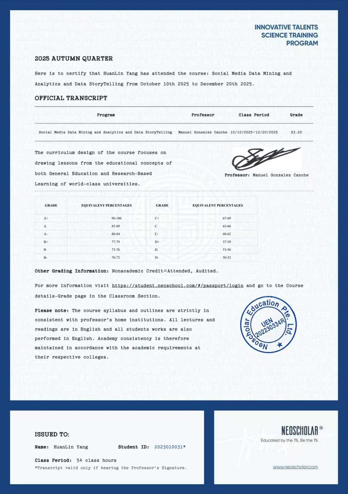
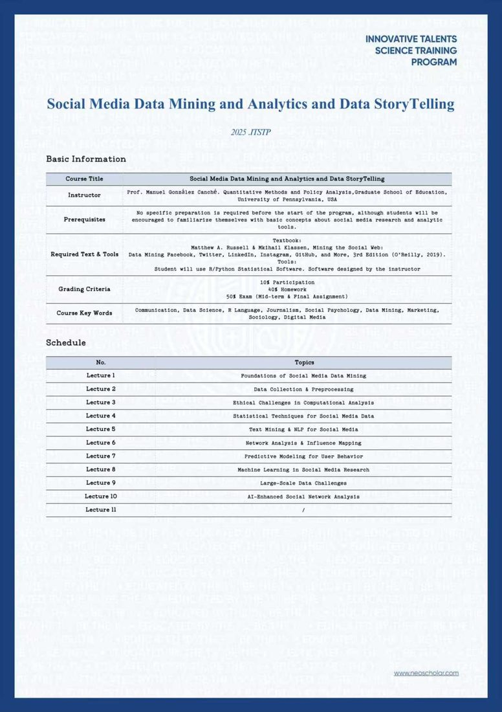

宾夕法尼亚大学交流
传媒学与数据科学：从用户行为到预测模型研发
全国人工智能拔尖计划人才项目选拔学员，参与宾夕法尼亚大学终身教授 Manuel González Canché 全英线上授课与研究项目。课程以「数据挖掘 + 人工智能」为核心框架， 聚焦社交媒体时代的用户行为分析、社会网络建模与预测系统开发，覆盖从伦理争议到技术落地的全链条。
注：人工智能时代，国家启动全国人工智能拔尖计划人才项目，在国内多所顶尖高校选拔跨学科多维度人才， 与国外顶尖高校交流，并参与国际教授的线上授课与研究项目。
课程介绍
课程深度融合传媒学理论与数据科学技术，聚焦社交媒体时代的用户行为分析、社会网络建模与预测系统开发。 通过分析 Facebook、Instagram、Twitter、TikTok、YouTube 等平台的原始数据，揭示行为模式与新兴趋势； 以 R / Python 完成数据挖掘与社交媒体分析的实战训练，并批判性审视社交媒体数据应用的伦理边界， 特别关注公共健康、社会公平等领域的真实应用。
传媒 × 数据科学 × 人工智能
课程关键词：传播学、数据科学、R 语言、新闻学、社会心理学、数据挖掘、市场营销、数字媒体。
Manuel González Canché 终身教授
宾夕法尼亚大学教育学院人类发展与定量方法学院和国际教育发展项目联合导师；ICQCM（跨学科研究机构）研究学者导师；曾凭《社区学院如何利用社交媒体提高学生成功率》荣获亚利桑那大学访问学者奖。
过程 + 结课综合评定
课堂参与 10% + 课后作业 40% + 期中与结课考核 50%；课程大纲与教授所在院校学术要求完全一致，全部讲义、作业与考核均为英文。
课程模块：从数据挖掘到 AI 增强分析
数据基础与伦理
社交媒体数据挖掘基础 · 数据收集与预处理 · 计算分析中的伦理挑战。
统计、文本与网络
社交媒体数据的统计技术 · 文本挖掘与自然语言处理（NLP）· 网络分析与影响力映射。
预测建模与机器学习
用户行为预测建模 · 社交媒体研究中的机器学习 · 大规模数据挑战 · AI 增强的社交网络分析。
佐证材料
官方成绩单（成绩 93.20 / 54 课时）与完整课程大纲（Syllabus）。

官方成绩单Official Transcript
- 课程：Social Media Data Mining and Analytics and Data StoryTelling
- 成绩 93.20，2025.10.10 – 2025.12.20，共 54 课时
- 教授签名 + NeoScholar Education 官方印章

课程大纲Syllabus
- Instructor：Prof. Manuel González Canché，University of Pennsylvania
- 教材：《Mining the Social Web》3rd Edition（O'Reilly）；R / Python 统计软件实战
- 10 个 lecture 模块，覆盖数据挖掘、NLP、预测建模与机器学习